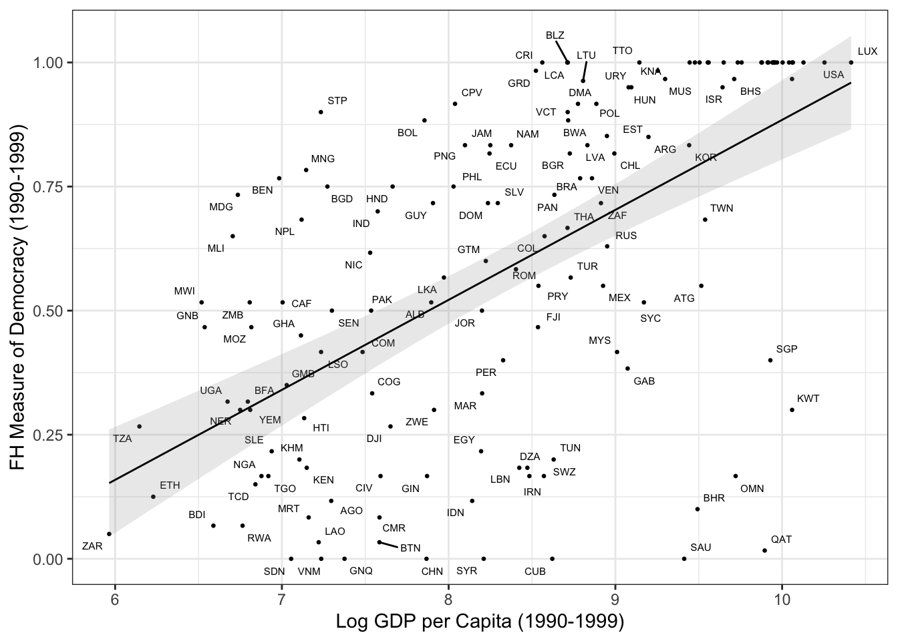
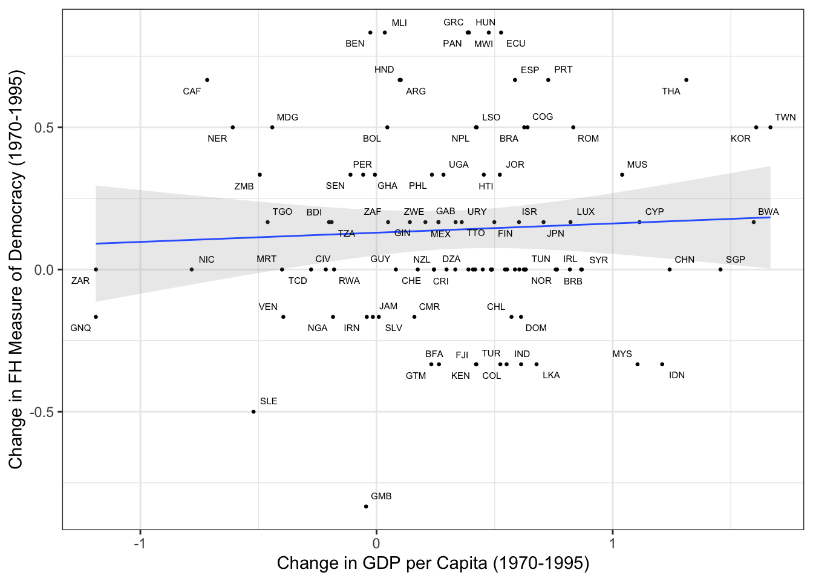

Chapter 8 Linear Models with Fixed Effects
8.1 Libraries
library(readxl) # read excel files
library(tibble) # cuter dataframes
library(dplyr) # data manipulation
library(ggplot2) # graphs
library(lfe) # fixed effects models
library(stargazer) # nice tables
library(ggrepel) # better graph labeling
library(lmtest) # for coeftest function
library(multiwayvcov) # (multiway) clustered standard errors
library(AER) # instrumental variables
library(ivpack) # robust standard errors for ivreg8.2 Review of Plotting: Recreating Figure 1
# read data for first figure
ajry_f1 = read_xls("data/ajry.xls",
sheet = "F1") %>%
rename(log_gdp_pc = lrgdpch,
freedom_house = fhpolrigaug)
ggplot(ajry_f1, aes(x = log_gdp_pc, y = freedom_house)) +
geom_point(size = 0.5) +
geom_text(aes(label = code), size = 2, hjust = 0, vjust = 0) +
geom_smooth(method = "lm", color = "black", size = 0.5, alpha = 0.2) +
labs(x = "Log GDP per Capita (1990-1999)",
y = "FH Measure of Democracy (1990-1999)") +
theme_bw()## `geom_smooth()` using formula 'y ~ x'
That is not bad, but we cannot read half of the label. Let’s try again, with the ggrepel package.
ggplot(ajry_f1, aes(x = log_gdp_pc, y = freedom_house)) +
geom_point(size = 0.5) +
geom_text_repel(aes(label = code), size = 2) +
geom_smooth(method = "lm", color = "black", size = 0.5, alpha = 0.2) +
labs(x = "Log GDP per Capita (1990-1999)",
y = "FH Measure of Democracy (1990-1999)") +
theme_bw()## `geom_smooth()` using formula 'y ~ x'## Warning: ggrepel: 24 unlabeled data points (too many overlaps). Consider
## increasing max.overlaps
rm(ajry_f1)8.3 Review of Plotting: Recreating Figure 2
# read data for second figure
ajry_f2 = read_xls("data/ajry.xls",
sheet = "F2") %>%
rename(freedom_house_change = s5fhpolrigaug,
log_gdp_pc_change = s5lrgdpch)
ggplot(ajry_f2, aes(x = log_gdp_pc_change, y = freedom_house_change)) +
geom_point(size = 0.5) +
geom_smooth(method = "lm", size = 0.5, alpha = 0.2) +
geom_text_repel(aes(label = code), size = 2) +
labs(x = "Change in GDP per Capita (1970-1995)",
y = "Change in FH Measure of Democracy (1970-1995)") +
theme_bw()## `geom_smooth()` using formula 'y ~ x'## Warning: ggrepel: 15 unlabeled data points (too many overlaps). Consider
## increasing max.overlaps
8.4 Loading the data for estimation
ajry_df = read_xls("data/ajry.xls",
sheet = 2) %>%
arrange(code_numeric, year_numeric) %>%
rename(log_gdp_pc = lrgdpch,
freedom_house = fhpolrigaug)
# generate lagged variables
ajry_df = ajry_df %>%
group_by(code_numeric) %>%
mutate(lag_log_gdp_pc = lag(log_gdp_pc, order_by = year_numeric),
lag_freedom_house = lag(freedom_house, order_by = year_numeric),
lag2_nsave = lag(nsave, 2, order_by = year_numeric),
lag_worldincome = lag(worldincome, order_by = year_numeric)) %>%
filter(sample == 1)8.5 Pooled OLS with Time Effects
# pooled ols with lm
pooled_est = lm(freedom_house ~ -1 + lag_freedom_house + lag_log_gdp_pc +
factor(year_numeric), data = ajry_df)
# standard errors clustered by country
vcov_country <- cluster.vcov(pooled_est, ajry_df$code_numeric)
coeftest(pooled_est, vcov_country)##
## t test of coefficients:
##
## Estimate Std. Error t value Pr(>|t|)
## lag_freedom_house 0.7063698 0.0354523 19.9245 < 2.2e-16 ***
## lag_log_gdp_pc 0.0723185 0.0099233 7.2878 6.705e-13 ***
## factor(year_numeric)33 -0.3468646 0.0617091 -5.6210 2.507e-08 ***
## factor(year_numeric)34 -0.4297435 0.0612981 -7.0107 4.543e-12 ***
## factor(year_numeric)35 -0.5462314 0.0669176 -8.1628 1.054e-15 ***
## factor(year_numeric)36 -0.4586181 0.0675307 -6.7913 1.976e-11 ***
## factor(year_numeric)37 -0.3969802 0.0689060 -5.7612 1.133e-08 ***
## factor(year_numeric)38 -0.4194864 0.0690369 -6.0763 1.789e-09 ***
## factor(year_numeric)39 -0.3994897 0.0650135 -6.1447 1.185e-09 ***
## factor(year_numeric)40 -0.3791493 0.0708188 -5.3538 1.084e-07 ***
## factor(year_numeric)41 -0.4031277 0.0653108 -6.1724 1.001e-09 ***
## ---
## Signif. codes: 0 '***' 0.001 '**' 0.01 '*' 0.05 '.' 0.1 ' ' 18.6 Fixed Effects with the lm function
# pooled ols with lm
fe_est = lm(freedom_house ~ -1 + lag_freedom_house + lag_log_gdp_pc +
factor(year_numeric) + factor(code_numeric), data = ajry_df)
# standard errors clustered by country
vcov_country <- cluster.vcov(fe_est, factor(ajry_df$code_numeric))
coeftest(fe_est, vcov_country)##
## t test of coefficients:
##
## Estimate Std. Error t value Pr(>|t|)
## lag_freedom_house 3.7863e-01 5.0931e-02 7.4341 2.758e-13 ***
## lag_log_gdp_pc 1.0415e-02 3.4548e-02 0.3015 0.7631419
## factor(year_numeric)33 -4.1689e-02 2.3873e-01 -0.1746 0.8614205
## factor(year_numeric)34 -7.1530e-02 2.4413e-01 -0.2930 0.7695972
## factor(year_numeric)35 -1.7531e-01 2.5152e-01 -0.6970 0.4859906
## factor(year_numeric)36 -1.3071e-01 2.5226e-01 -0.5182 0.6044889
## factor(year_numeric)37 -7.0236e-02 2.5313e-01 -0.2775 0.7814963
## factor(year_numeric)38 -7.5191e-02 2.5788e-01 -0.2916 0.7706850
## factor(year_numeric)39 -4.0343e-02 2.5574e-01 -0.1578 0.8746916
## factor(year_numeric)40 6.2191e-05 2.6625e-01 0.0002 0.9998137
## factor(year_numeric)41 2.8773e-03 2.6406e-01 0.0109 0.9913089
## factor(code_numeric)4 1.6193e-01 2.9881e-02 5.4192 7.968e-08 ***
## factor(code_numeric)6 4.1576e-01 6.6405e-02 6.2610 6.292e-10 ***
## factor(code_numeric)7 2.2724e-01 2.0616e-02 11.0225 < 2.2e-16 ***
## factor(code_numeric)8 2.1783e-01 7.0593e-02 3.0858 0.0021015 **
## factor(code_numeric)9 5.8800e-01 9.3824e-02 6.2670 6.066e-10 ***
## factor(code_numeric)10 5.9152e-01 8.8594e-02 6.6767 4.620e-11 ***
## factor(code_numeric)11 2.0658e-02 1.2961e-02 1.5938 0.1113794
## factor(code_numeric)14 8.2058e-03 2.8410e-02 0.2888 0.7727810
## factor(code_numeric)15 5.8962e-01 8.9159e-02 6.6132 6.952e-11 ***
## factor(code_numeric)16 1.7273e-01 1.6391e-02 10.5381 < 2.2e-16 ***
## factor(code_numeric)17 1.7885e-01 2.6830e-02 6.6660 4.952e-11 ***
## factor(code_numeric)18 3.4501e-01 2.2238e-02 15.5145 < 2.2e-16 ***
## factor(code_numeric)19 4.2308e-01 5.5307e-02 7.6498 5.898e-14 ***
## factor(code_numeric)23 -5.2164e-02 3.7753e-02 -1.3817 0.1674502
## factor(code_numeric)24 5.4440e-01 5.9107e-02 9.2103 < 2.2e-16 ***
## factor(code_numeric)25 3.5215e-01 2.8596e-02 12.3148 < 2.2e-16 ***
## factor(code_numeric)26 3.7473e-01 4.7202e-02 7.9388 7.051e-15 ***
## factor(code_numeric)27 5.7775e-01 7.8779e-02 7.3338 5.580e-13 ***
## factor(code_numeric)30 5.1360e-01 4.5905e-02 11.1884 < 2.2e-16 ***
## factor(code_numeric)31 1.3606e-01 9.7552e-03 13.9473 < 2.2e-16 ***
## factor(code_numeric)32 5.8759e-01 9.5013e-02 6.1843 1.003e-09 ***
## factor(code_numeric)33 5.8564e-01 1.0193e-01 5.7454 1.312e-08 ***
## factor(code_numeric)34 3.7967e-01 5.0385e-02 7.5354 1.343e-13 ***
## factor(code_numeric)35 2.4077e-02 1.2766e-02 1.8860 0.0596704 .
## factor(code_numeric)36 1.0009e-01 1.4282e-02 7.0081 5.205e-12 ***
## factor(code_numeric)37 6.4791e-02 1.3045e-02 4.9668 8.355e-07 ***
## factor(code_numeric)38 9.6525e-02 1.3631e-02 7.0813 3.176e-12 ***
## factor(code_numeric)39 4.1831e-01 4.5697e-02 9.1539 < 2.2e-16 ***
## factor(code_numeric)40 1.5144e-01 1.6432e-02 9.2163 < 2.2e-16 ***
## factor(code_numeric)41 3.3822e-01 1.8823e-02 17.9680 < 2.2e-16 ***
## factor(code_numeric)42 5.9210e-01 5.8706e-02 10.0859 < 2.2e-16 ***
## factor(code_numeric)43 -9.9454e-02 4.0976e-02 -2.4271 0.0154442 *
## factor(code_numeric)44 5.1843e-01 6.4375e-02 8.0533 2.986e-15 ***
## factor(code_numeric)45 5.1991e-01 7.8405e-02 6.6311 6.199e-11 ***
## factor(code_numeric)47 5.1661e-01 9.2338e-02 5.5948 3.052e-08 ***
## factor(code_numeric)51 5.2482e-01 5.3926e-02 9.7324 < 2.2e-16 ***
## factor(code_numeric)52 5.8748e-01 9.5341e-02 6.1619 1.148e-09 ***
## factor(code_numeric)53 4.0917e-01 2.9577e-02 13.8340 < 2.2e-16 ***
## factor(code_numeric)54 9.5593e-02 3.3655e-02 2.8404 0.0046223 **
## factor(code_numeric)55 3.4636e-01 3.5097e-02 9.8687 < 2.2e-16 ***
## factor(code_numeric)56 1.6095e-01 1.7164e-02 9.3770 < 2.2e-16 ***
## factor(code_numeric)58 4.0409e-01 6.6964e-02 6.0345 2.457e-09 ***
## factor(code_numeric)59 5.8866e-01 5.8149e-02 10.1233 < 2.2e-16 ***
## factor(code_numeric)60 7.5846e-02 5.0078e-02 1.5146 0.1302880
## factor(code_numeric)61 7.6009e-02 3.1685e-02 2.3989 0.0166770 *
## factor(code_numeric)63 5.3987e-01 8.5772e-02 6.2943 5.133e-10 ***
## factor(code_numeric)64 2.6809e-01 4.5531e-02 5.8881 5.788e-09 ***
## factor(code_numeric)65 5.7704e-01 8.8222e-02 6.5408 1.103e-10 ***
## factor(code_numeric)66 1.4146e-01 5.2368e-02 2.7013 0.0070550 **
## factor(code_numeric)67 5.8811e-01 8.9490e-02 6.5717 9.059e-11 ***
## factor(code_numeric)70 2.2235e-01 1.7367e-02 12.8028 < 2.2e-16 ***
## factor(code_numeric)71 2.1795e-02 1.4917e-02 1.4611 0.1443897
## factor(code_numeric)72 2.5364e-01 3.2729e-02 7.7499 2.847e-14 ***
## factor(code_numeric)73 2.0237e-01 3.8840e-02 5.2104 2.410e-07 ***
## factor(code_numeric)74 -2.0772e-02 7.9611e-03 -2.6092 0.0092480 **
## factor(code_numeric)75 4.8964e-01 6.9596e-02 7.0354 4.330e-12 ***
## factor(code_numeric)76 5.7443e-01 4.4052e-02 13.0398 < 2.2e-16 ***
## factor(code_numeric)77 3.4235e-01 3.4777e-02 9.8441 < 2.2e-16 ***
## factor(code_numeric)78 3.1616e-01 2.8584e-02 11.0605 < 2.2e-16 ***
## factor(code_numeric)79 3.4532e-01 2.2451e-02 15.3812 < 2.2e-16 ***
## factor(code_numeric)80 5.4910e-01 4.7291e-02 11.6112 < 2.2e-16 ***
## factor(code_numeric)81 1.2864e-01 1.9181e-02 6.7069 3.802e-11 ***
## factor(code_numeric)82 3.7392e-01 5.6692e-02 6.5957 7.775e-11 ***
## factor(code_numeric)83 1.9096e-01 9.2225e-03 20.7058 < 2.2e-16 ***
## factor(code_numeric)84 4.9470e-01 3.8115e-02 12.9792 < 2.2e-16 ***
## factor(code_numeric)85 5.8847e-01 7.6803e-02 7.6621 5.397e-14 ***
## factor(code_numeric)86 1.4631e-01 3.3904e-02 4.3155 1.796e-05 ***
## factor(code_numeric)88 5.8913e-01 9.0561e-02 6.5054 1.380e-10 ***
## factor(code_numeric)89 5.2999e-01 7.6612e-02 6.9179 9.518e-12 ***
## factor(code_numeric)90 5.8692e-01 8.6063e-02 6.8197 1.822e-11 ***
## factor(code_numeric)91 5.2817e-01 5.0711e-02 10.4152 < 2.2e-16 ***
## factor(code_numeric)92 1.8031e-01 2.4815e-02 7.2661 8.941e-13 ***
## factor(code_numeric)93 5.6819e-01 8.2830e-02 6.8597 1.399e-11 ***
## factor(code_numeric)94 1.0524e-02 3.8074e-02 0.2764 0.7823069
## factor(code_numeric)95 1.0774e-01 1.8093e-02 5.9548 3.926e-09 ***
## factor(code_numeric)96 -1.0717e-01 2.1725e-02 -4.9330 9.887e-07 ***
## factor(code_numeric)97 2.6984e-02 2.2666e-02 1.1905 0.2341998
## factor(code_numeric)99 5.4006e-01 6.9106e-02 7.8149 1.767e-14 ***
## factor(code_numeric)101 3.3742e-01 4.0222e-02 8.3889 2.270e-16 ***
## factor(code_numeric)104 1.5938e-02 2.4818e-02 0.6422 0.5209229
## factor(code_numeric)107 5.7775e-01 5.4977e-02 10.5088 < 2.2e-16 ***
## factor(code_numeric)109 4.3280e-01 3.5299e-02 12.2611 < 2.2e-16 ***
## factor(code_numeric)110 2.3431e-01 1.6531e-02 14.1739 < 2.2e-16 ***
## factor(code_numeric)111 5.2749e-01 5.8978e-02 8.9440 < 2.2e-16 ***
## factor(code_numeric)112 5.6232e-01 9.6567e-02 5.8232 8.417e-09 ***
## factor(code_numeric)113 5.9103e-01 5.2080e-02 11.3484 < 2.2e-16 ***
## factor(code_numeric)114 2.2973e-01 2.3776e-02 9.6620 < 2.2e-16 ***
## factor(code_numeric)115 5.6017e-01 2.0967e-02 26.7174 < 2.2e-16 ***
## factor(code_numeric)116 3.1675e-01 2.6359e-02 12.0168 < 2.2e-16 ***
## factor(code_numeric)118 3.3673e-01 5.3967e-02 6.2395 7.173e-10 ***
## factor(code_numeric)119 2.2015e-01 3.4675e-02 6.3490 3.663e-10 ***
## factor(code_numeric)120 1.8539e-01 2.3593e-02 7.8579 1.286e-14 ***
## factor(code_numeric)121 5.2026e-01 7.7427e-02 6.7194 3.506e-11 ***
## factor(code_numeric)125 2.0935e-01 2.0658e-02 10.1339 < 2.2e-16 ***
## factor(code_numeric)126 6.7562e-02 8.9508e-03 7.5482 1.225e-13 ***
## factor(code_numeric)127 5.3418e-01 6.1703e-02 8.6573 < 2.2e-16 ***
## factor(code_numeric)128 1.7093e-01 3.7344e-02 4.5771 5.479e-06 ***
## factor(code_numeric)129 3.3221e-01 4.5143e-02 7.3590 4.679e-13 ***
## factor(code_numeric)130 4.2931e-01 4.5681e-02 9.3980 < 2.2e-16 ***
## factor(code_numeric)131 1.2193e-01 1.3065e-02 9.3325 < 2.2e-16 ***
## factor(code_numeric)132 1.7334e-01 1.9743e-02 8.7801 < 2.2e-16 ***
## factor(code_numeric)133 2.9120e-01 3.1504e-02 9.2434 < 2.2e-16 ***
## factor(code_numeric)134 5.8899e-01 9.0980e-02 6.4738 1.683e-10 ***
## factor(code_numeric)135 5.8920e-01 9.0375e-02 6.5195 1.262e-10 ***
## factor(code_numeric)136 3.0599e-01 2.5966e-02 11.7840 < 2.2e-16 ***
## factor(code_numeric)137 5.8882e-01 9.1452e-02 6.4386 2.099e-10 ***
## factor(code_numeric)140 1.7623e-01 1.8497e-02 9.5275 < 2.2e-16 ***
## factor(code_numeric)141 4.8289e-01 2.9461e-02 16.3908 < 2.2e-16 ***
## factor(code_numeric)142 3.0421e-01 3.9037e-02 7.7930 2.075e-14 ***
## factor(code_numeric)144 3.3488e-01 4.3930e-02 7.6230 7.156e-14 ***
## factor(code_numeric)145 3.8707e-01 3.4541e-02 11.2061 < 2.2e-16 ***
## factor(code_numeric)147 4.8284e-01 4.3339e-02 11.1410 < 2.2e-16 ***
## factor(code_numeric)148 4.8110e-01 5.1535e-02 9.3354 < 2.2e-16 ***
## factor(code_numeric)150 4.3434e-01 5.9722e-02 7.2727 8.541e-13 ***
## factor(code_numeric)151 2.4963e-01 3.4267e-02 7.2846 7.862e-13 ***
## factor(code_numeric)153 1.5059e-01 1.9464e-02 7.7367 3.136e-14 ***
## factor(code_numeric)154 -1.4431e-02 5.2231e-02 -0.2763 0.7823904
## factor(code_numeric)155 2.7024e-02 2.1621e-02 1.2499 0.2117055
## factor(code_numeric)160 3.1820e-01 1.8678e-02 17.0366 < 2.2e-16 ***
## factor(code_numeric)162 1.8732e-01 6.4579e-02 2.9007 0.0038276 **
## factor(code_numeric)165 1.5966e-01 1.6637e-02 9.5967 < 2.2e-16 ***
## factor(code_numeric)166 4.1406e-01 4.3556e-02 9.5064 < 2.2e-16 ***
## factor(code_numeric)168 3.2435e-01 2.1140e-02 15.3429 < 2.2e-16 ***
## factor(code_numeric)170 5.8626e-01 6.4695e-02 9.0620 < 2.2e-16 ***
## factor(code_numeric)171 5.2006e-01 7.7996e-02 6.6677 4.897e-11 ***
## factor(code_numeric)172 5.7662e-01 9.2971e-02 6.2021 9.002e-10 ***
## factor(code_numeric)174 2.4048e-01 5.2931e-02 4.5433 6.411e-06 ***
## factor(code_numeric)175 3.7597e-02 1.6757e-02 2.2437 0.0251300 *
## factor(code_numeric)176 6.6391e-02 1.4184e-02 4.6806 3.369e-06 ***
## factor(code_numeric)177 6.3735e-02 1.3082e-02 4.8721 1.336e-06 ***
## factor(code_numeric)178 3.5007e-01 2.5720e-02 13.6110 < 2.2e-16 ***
## factor(code_numeric)182 5.3754e-01 7.0228e-02 7.6543 5.710e-14 ***
## factor(code_numeric)183 9.1527e-02 3.1195e-02 2.9340 0.0034440 **
## factor(code_numeric)184 3.5105e-01 4.4278e-02 7.9284 7.617e-15 ***
## factor(code_numeric)186 3.1766e-01 4.4714e-02 7.1043 2.715e-12 ***
## factor(code_numeric)187 1.4516e-01 3.9787e-02 3.6483 0.0002814 ***
## factor(code_numeric)188 9.2944e-02 3.5594e-02 2.6112 0.0091940 **
## factor(code_numeric)189 1.5632e-01 4.1266e-02 3.7881 0.0001634 ***
## factor(code_numeric)191 4.5847e-01 6.3347e-02 7.2374 1.090e-12 ***
## factor(code_numeric)192 5.7786e-01 9.9262e-02 5.8216 8.493e-09 ***
## factor(code_numeric)194 -8.4544e-02 1.7685e-02 -4.7806 2.086e-06 ***
## factor(code_numeric)195 4.8397e-01 5.2186e-02 9.2739 < 2.2e-16 ***
## factor(code_numeric)196 5.0183e-01 6.8964e-02 7.2767 8.304e-13 ***
## factor(code_numeric)197 -7.6516e-02 2.0959e-02 -3.6507 0.0002788 ***
## factor(code_numeric)203 1.6546e-01 2.9344e-02 5.6385 2.393e-08 ***
## factor(code_numeric)208 3.7521e-01 5.7867e-02 6.4840 1.578e-10 ***
## factor(code_numeric)209 3.3121e-02 2.7563e-02 1.2016 0.2298658
## factor(code_numeric)210 1.9998e-01 2.0983e-02 9.5305 < 2.2e-16 ***
## factor(code_numeric)211 1.7752e-01 2.0392e-02 8.7054 < 2.2e-16 ***
## ---
## Signif. codes: 0 '***' 0.001 '**' 0.01 '*' 0.05 '.' 0.1 ' ' 18.7 Pooled OLS and FE with the lfe package
# pooled OLS
felm1 = felm(freedom_house ~ lag_freedom_house + lag_log_gdp_pc | year_numeric | 0 | code_numeric,
data = ajry_df)
# FE
felm2 = felm(freedom_house ~ lag_freedom_house + lag_log_gdp_pc | year_numeric + code_numeric | 0 |
code_numeric, data = ajry_df)
stargazer(felm1, felm2, type = 'text')##
## =====================================================
## Dependent variable:
## ---------------------------------
## freedom_house
## (1) (2)
## -----------------------------------------------------
## lag_freedom_house 0.706*** 0.379***
## (0.035) (0.046)
##
## lag_log_gdp_pc 0.072*** 0.010
## (0.010) (0.032)
##
## -----------------------------------------------------
## Observations 945 945
## R2 0.725 0.796
## Adjusted R2 0.722 0.755
## Residual Std. Error 0.192 (df = 934) 0.180 (df = 785)
## =====================================================
## Note: *p<0.1; **p<0.05; ***p<0.01Notice that this command automatically spits out cluster-robust standard errors and passes them to stargazer. That is absolutely fantastic, right? For robust standard errors we have to work a bit.
# function to recover robust standard errors
get_felm_robust_se = function(felm_result) {
felm_summary = summary(felm_result, robust = TRUE)
robust_se = felm_summary$coefficients[, 2]
}8.8 Review of IV
# Second Stage with ivreg, normal standard errors
iv_sav = ivreg(freedom_house ~ lag_freedom_house + lag_log_gdp_pc + factor(year_numeric) +
factor(code_numeric) | lag_freedom_house + lag2_nsave + factor(year_numeric) +
factor(code_numeric), data = ajry_df)
summary(iv_sav) ##
## Call:
## ivreg(formula = freedom_house ~ lag_freedom_house + lag_log_gdp_pc +
## factor(year_numeric) + factor(code_numeric) | lag_freedom_house +
## lag2_nsave + factor(year_numeric) + factor(code_numeric),
## data = ajry_df)
##
## Residuals:
## Min 1Q Median 3Q Max
## -0.677516 -0.076065 -0.002338 0.085441 0.599790
##
## Coefficients:
## Estimate Std. Error t value Pr(>|t|)
## (Intercept) 0.169672 0.488436 0.347 0.728406
## lag_freedom_house 0.362910 0.035827 10.129 < 2e-16 ***
## lag_log_gdp_pc -0.020493 0.070796 -0.289 0.772309
## factor(year_numeric)34 -0.030477 0.038146 -0.799 0.424565
## factor(year_numeric)35 -0.123590 0.041347 -2.989 0.002890 **
## factor(year_numeric)36 -0.073594 0.047776 -1.540 0.123887
## factor(year_numeric)37 -0.007184 0.053669 -0.134 0.893557
## factor(year_numeric)38 -0.017182 0.058162 -0.295 0.767751
## factor(year_numeric)39 0.021396 0.058867 0.363 0.716364
## factor(year_numeric)40 0.064340 0.062995 1.021 0.307424
## factor(year_numeric)41 0.069922 0.065121 1.074 0.283295
## factor(code_numeric)6 0.479203 0.158838 3.017 0.002640 **
## factor(code_numeric)8 0.284433 0.183283 1.552 0.121115
## factor(code_numeric)9 0.675419 0.189699 3.560 0.000394 ***
## factor(code_numeric)10 0.673215 0.180377 3.732 0.000204 ***
## factor(code_numeric)14 -0.015853 0.120024 -0.132 0.894954
## factor(code_numeric)15 0.672222 0.180646 3.721 0.000213 ***
## factor(code_numeric)16 0.179565 0.110810 1.620 0.105550
## factor(code_numeric)17 0.179865 0.120176 1.497 0.134898
## factor(code_numeric)18 0.336736 0.119985 2.806 0.005139 **
## factor(code_numeric)23 -0.017314 0.211064 -0.082 0.934645
## factor(code_numeric)24 0.591526 0.150815 3.922 9.58e-05 ***
## factor(code_numeric)25 0.377306 0.109020 3.461 0.000569 ***
## factor(code_numeric)26 0.417357 0.124468 3.353 0.000839 ***
## factor(code_numeric)27 0.646461 0.162333 3.982 7.49e-05 ***
## factor(code_numeric)30 0.545156 0.118985 4.582 5.40e-06 ***
## factor(code_numeric)31 0.145409 0.106096 1.371 0.170928
## factor(code_numeric)32 0.676225 0.192015 3.522 0.000455 ***
## factor(code_numeric)33 0.681284 0.205619 3.313 0.000966 ***
## factor(code_numeric)34 0.392207 0.131573 2.981 0.002967 **
## factor(code_numeric)35 0.015660 0.105347 0.149 0.881872
## factor(code_numeric)36 0.091454 0.108214 0.845 0.398315
## factor(code_numeric)37 0.042301 0.106907 0.396 0.692453
## factor(code_numeric)38 0.079314 0.106817 0.743 0.458002
## factor(code_numeric)39 0.456811 0.120229 3.800 0.000157 ***
## factor(code_numeric)40 0.161014 0.115192 1.398 0.162592
## factor(code_numeric)41 0.350108 0.115632 3.028 0.002548 **
## factor(code_numeric)42 0.640405 0.126330 5.069 5.04e-07 ***
## factor(code_numeric)43 -0.059135 0.171053 -0.346 0.729657
## factor(code_numeric)44 0.576541 0.144363 3.994 7.15e-05 ***
## factor(code_numeric)45 0.591476 0.236263 2.503 0.012511 *
## factor(code_numeric)47 0.603525 0.220770 2.734 0.006410 **
## factor(code_numeric)51 0.577474 0.152402 3.789 0.000163 ***
## factor(code_numeric)52 0.676447 0.192654 3.511 0.000473 ***
## factor(code_numeric)53 0.473624 0.109042 4.343 1.60e-05 ***
## factor(code_numeric)54 0.126940 0.125086 1.015 0.310521
## factor(code_numeric)55 0.353559 0.113777 3.107 0.001958 **
## factor(code_numeric)56 0.176670 0.104458 1.691 0.091196 .
## factor(code_numeric)58 0.468235 0.161766 2.895 0.003908 **
## factor(code_numeric)61 0.051251 0.122568 0.418 0.675965
## factor(code_numeric)63 0.619959 0.178506 3.473 0.000544 ***
## factor(code_numeric)64 0.306104 0.126789 2.414 0.016006 *
## factor(code_numeric)65 0.658951 0.180060 3.660 0.000270 ***
## factor(code_numeric)66 0.183726 0.150693 1.219 0.223152
## factor(code_numeric)67 0.671077 0.181409 3.699 0.000232 ***
## factor(code_numeric)70 0.216119 0.106751 2.025 0.043273 *
## factor(code_numeric)71 0.034925 0.110002 0.317 0.750955
## factor(code_numeric)72 0.252102 0.115699 2.179 0.029648 *
## factor(code_numeric)73 0.171593 0.139591 1.229 0.219364
## factor(code_numeric)74 -0.014710 0.110618 -0.133 0.894247
## factor(code_numeric)75 0.551922 0.159201 3.467 0.000557 ***
## factor(code_numeric)76 0.572273 0.144944 3.948 8.62e-05 ***
## factor(code_numeric)77 0.373408 0.113488 3.290 0.001048 **
## factor(code_numeric)78 0.334633 0.112832 2.966 0.003116 **
## factor(code_numeric)79 0.361195 0.103505 3.490 0.000512 ***
## factor(code_numeric)81 0.114460 0.116050 0.986 0.324307
## factor(code_numeric)82 0.474590 0.156578 3.031 0.002521 **
## factor(code_numeric)83 0.219953 0.106311 2.069 0.038894 *
## factor(code_numeric)84 0.499985 0.106987 4.673 3.52e-06 ***
## factor(code_numeric)85 0.657962 0.157570 4.176 3.32e-05 ***
## factor(code_numeric)86 0.173215 0.123747 1.400 0.162005
## factor(code_numeric)88 0.673188 0.183360 3.671 0.000258 ***
## factor(code_numeric)89 0.600827 0.162467 3.698 0.000233 ***
## factor(code_numeric)90 0.666378 0.175112 3.805 0.000153 ***
## factor(code_numeric)91 0.565682 0.120193 4.706 3.00e-06 ***
## factor(code_numeric)92 0.212268 0.113589 1.869 0.062051 .
## factor(code_numeric)93 0.644689 0.170697 3.777 0.000171 ***
## factor(code_numeric)95 0.098251 0.110554 0.889 0.374440
## factor(code_numeric)99 0.600061 0.165771 3.620 0.000315 ***
## factor(code_numeric)101 0.388717 0.124714 3.117 0.001898 **
## factor(code_numeric)104 0.039985 0.208015 0.192 0.847620
## factor(code_numeric)107 0.590006 0.148608 3.970 7.87e-05 ***
## factor(code_numeric)109 0.450721 0.104293 4.322 1.76e-05 ***
## factor(code_numeric)110 0.226397 0.113210 2.000 0.045884 *
## factor(code_numeric)112 0.652927 0.197087 3.313 0.000968 ***
## factor(code_numeric)113 0.636184 0.212508 2.994 0.002847 **
## factor(code_numeric)114 0.250611 0.108748 2.304 0.021468 *
## factor(code_numeric)116 0.285630 0.112913 2.530 0.011622 *
## factor(code_numeric)118 0.387727 0.140368 2.762 0.005882 **
## factor(code_numeric)120 0.168198 0.117269 1.434 0.151907
## factor(code_numeric)125 0.194793 0.121680 1.601 0.109829
## factor(code_numeric)126 0.029631 0.106110 0.279 0.780134
## factor(code_numeric)127 0.587099 0.142284 4.126 4.10e-05 ***
## factor(code_numeric)128 0.141620 0.129898 1.090 0.275959
## factor(code_numeric)129 0.372208 0.123189 3.021 0.002602 **
## factor(code_numeric)130 0.465344 0.161116 2.888 0.003986 **
## factor(code_numeric)131 0.138069 0.109420 1.262 0.207407
## factor(code_numeric)132 0.166727 0.107667 1.549 0.121916
## factor(code_numeric)133 0.320197 0.112626 2.843 0.004591 **
## factor(code_numeric)134 0.673476 0.184172 3.657 0.000273 ***
## factor(code_numeric)135 0.673060 0.183000 3.678 0.000252 ***
## factor(code_numeric)136 0.318107 0.115146 2.763 0.005874 **
## factor(code_numeric)137 0.673800 0.185087 3.640 0.000291 ***
## factor(code_numeric)140 0.253155 0.123030 2.058 0.039968 *
## factor(code_numeric)141 0.477834 0.203031 2.354 0.018856 *
## factor(code_numeric)142 0.341313 0.121621 2.806 0.005141 **
## factor(code_numeric)144 0.375525 0.123661 3.037 0.002475 **
## factor(code_numeric)145 0.413724 0.108475 3.814 0.000148 ***
## factor(code_numeric)147 0.512661 0.122242 4.194 3.07e-05 ***
## factor(code_numeric)148 0.530075 0.151003 3.510 0.000474 ***
## factor(code_numeric)150 0.490848 0.145648 3.370 0.000790 ***
## factor(code_numeric)151 0.290133 0.118858 2.441 0.014878 *
## factor(code_numeric)153 0.173212 0.114921 1.507 0.132176
## factor(code_numeric)155 0.009336 0.114053 0.082 0.934784
## factor(code_numeric)160 0.319616 0.110995 2.880 0.004096 **
## factor(code_numeric)162 0.247927 0.162397 1.527 0.127265
## factor(code_numeric)165 0.125936 0.112631 1.118 0.263873
## factor(code_numeric)166 0.453163 0.120692 3.755 0.000187 ***
## factor(code_numeric)168 0.388228 0.126283 3.074 0.002187 **
## factor(code_numeric)170 0.645564 0.225486 2.863 0.004314 **
## factor(code_numeric)171 0.591186 0.235737 2.508 0.012359 *
## factor(code_numeric)172 0.664599 0.190596 3.487 0.000517 ***
## factor(code_numeric)174 0.291291 0.160047 1.820 0.069154 .
## factor(code_numeric)175 0.051675 0.111336 0.464 0.642687
## factor(code_numeric)176 0.027898 0.109727 0.254 0.799373
## factor(code_numeric)177 0.054677 0.108566 0.504 0.614668
## factor(code_numeric)178 0.370369 0.105485 3.511 0.000473 ***
## factor(code_numeric)182 0.599432 0.151349 3.961 8.19e-05 ***
## factor(code_numeric)183 0.133137 0.125698 1.059 0.289860
## factor(code_numeric)184 0.391082 0.121874 3.209 0.001389 **
## factor(code_numeric)186 0.359565 0.135055 2.662 0.007926 **
## factor(code_numeric)187 0.113755 0.132925 0.856 0.392392
## factor(code_numeric)188 0.065677 0.127692 0.514 0.607167
## factor(code_numeric)189 0.192374 0.207868 0.925 0.355023
## factor(code_numeric)191 0.517016 0.145189 3.561 0.000393 ***
## factor(code_numeric)192 0.670964 0.201181 3.335 0.000895 ***
## factor(code_numeric)195 0.520239 0.149799 3.473 0.000544 ***
## factor(code_numeric)196 0.566123 0.154300 3.669 0.000261 ***
## factor(code_numeric)197 -0.089423 0.199570 -0.448 0.654225
## factor(code_numeric)203 0.111615 0.207584 0.538 0.590955
## factor(code_numeric)208 0.430353 0.145106 2.966 0.003115 **
## factor(code_numeric)209 0.011614 0.116349 0.100 0.920514
## factor(code_numeric)210 0.194566 0.110077 1.768 0.077545 .
## factor(code_numeric)211 0.194139 0.113144 1.716 0.086603 .
## ---
## Signif. codes: 0 '***' 0.001 '**' 0.01 '*' 0.05 '.' 0.1 ' ' 1
##
## Residual standard error: 0.1809 on 747 degrees of freedom
## Multiple R-Squared: 0.7938, Adjusted R-squared: 0.7543
## Wald test: 20.12 on 143 and 747 DF, p-value: < 2.2e-168.9 IV with felm
# note the difference in the instrumental variable list.
summary(felm(freedom_house ~ lag_freedom_house | year_numeric + code_numeric |
(lag_log_gdp_pc ~ lag2_nsave) | code_numeric, data = ajry_df))##
## Call:
## felm(formula = freedom_house ~ lag_freedom_house | year_numeric + code_numeric | (lag_log_gdp_pc ~ lag2_nsave) | code_numeric, data = ajry_df)
##
## Residuals:
## Min 1Q Median 3Q Max
## -0.67752 -0.07606 -0.00234 0.08544 0.59979
##
## Coefficients:
## Estimate Cluster s.e. t value Pr(>|t|)
## lag_freedom_house 0.36291 0.05167 7.024 1.01e-10 ***
## `lag_log_gdp_pc(fit)` -0.02049 0.07463 -0.275 0.784
## ---
## Signif. codes: 0 '***' 0.001 '**' 0.01 '*' 0.05 '.' 0.1 ' ' 1
##
## Residual standard error: 0.1809 on 747 degrees of freedom
## (478 observations deleted due to missingness)
## Multiple R-squared(full model): 0.7938 Adjusted R-squared: 0.7543
## Multiple R-squared(proj model): 0.1264 Adjusted R-squared: -0.04086
## F-statistic(full model, *iid*):20.12 on 143 and 747 DF, p-value: < 2.2e-16
## F-statistic(proj model): 25.54 on 2 and 133 DF, p-value: 4.101e-10
## F-statistic(endog. vars):0.07541 on 1 and 133 DF, p-value: 0.784